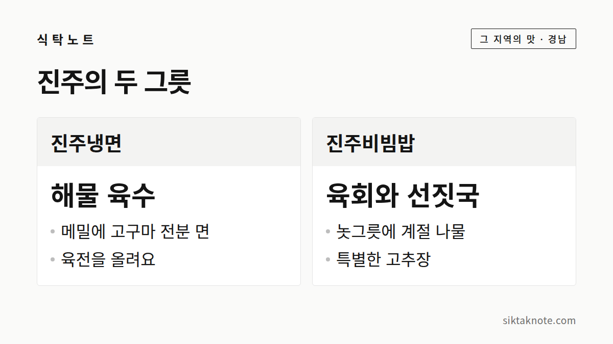

진주냉면과 진주비빔밥 이야기 — 유등축제 가기 전에 알아둘 두 그릇

3줄 요약
- 진주냉면은 해물 육수에 메밀과 고구마 전분을 섞은 면을 말고 육전을 올린 냉면으로 소개돼요.
- 진주비빔밥은 놋그릇에 나물과 육회를 올리고 선짓국을 곁들이는 게 특징이에요.
- 유래는 제사 음복에서 나왔다는 이야기가 가장 널리 알려졌고, 임진왜란 이야기 같은 다른 설도 전해져요.

유등을 보러 가는 길에, 두 그릇
진주 남강유등축제는 10월 18일까지 열려요. 축제 일정은 진주 남강유등축제 가이드에서 따로 풀어 놓았어요. 여기서는 가는 김에 먹어 볼 만한 진주의 향토음식, 냉면과 비빔밥 이야기를 해 볼게요.

진주냉면, 평양냉면의 남쪽 짝
진주냉면은 해물 육수와 쇠고기 육수를 섞은 국물에 메밀국수를 만 음식이에요. 디지털진주문화대전에 따르면 육수에는 멸치, 바지락, 건홍합, 해삼, 전복, 석이버섯 등을 쓴다고 해요. 평양냉면이 감자 전분을 쓰는 것과 달리, 진주냉면의 면은 메밀가루에 고구마 전분을 섞는다고 설명해요. 고명으로 육전이 올라가는 것도 특징으로 꼽혀요.
옛 기록에는 "냉면 중에 제일로 여기는 것은 평양냉면과 진주냉면"이라는 구절이 있다고 소개돼요. 북쪽의 평양냉면에 맞서는 남쪽의 냉면이었다는 말이지요.
그런데 이 냉면은 한동안 맥이 끊겼어요. 1960년대 중반 중앙시장에 큰 불이 난 뒤로 진주에서 사라졌다고 해요. 그러다 1999년에 식생활문화를 연구하는 사람이 옛 방식대로 되살렸다고 소개돼요. 다만 화재가 난 해와 복원된 해는 자료마다 조금씩 달라서, "중앙시장 화재 이후 한동안 끊겼다가 1990년대 말에 복원되었다고 알려져 있다" 정도로 읽어 주세요.

꽃처럼 올린 진주비빔밥
한국민족문화대백과사전은 진주비빔밥을 이렇게 설명해요. 놋그릇에 밥을 담고 콩나물, 숙주, 쑥갓, 무, 고사리 같은 나물과 청포묵, 소고기 육회를 올려요. 선짓국이나 바지락을 넣은 보탕국을 곁들이고, 고추장은 특별히 만든 것을 쓴다고 해요. 색색의 재료가 꽃처럼 예쁘다고 해서 꽃밥, 화반이라는 별칭도 있다고 해요.
비빔밥은 어디서 시작됐을까
유래는 이야기가 여러 갈래예요. 가장 널리 알려진 건 제사 음복에서 나왔다는 이야기로, 제사를 지낸 뒤 제사 음식을 큰 그릇에 나물과 비벼 먹던 풍습에서 비롯됐다고 해요. 진주성 전투 때 밥과 반찬을 따로 나르기 번거로워 밥 위에 나물과 고기를 얹은 데서 시작했다는 임진왜란 이야기도 있는데, 이쪽은 전해 내려오는 이야기로 보는 게 좋아요. 그 밖에 관청의 기생이 즐기던 음식이었다는 이야기, 농사일을 함께 하던 두레 음식이었다는 이야기도 있어요.
어느 쪽이 맞는지 확정된 것은 없어요. 여러 설이 있다는 것 자체가 이 음식이 오래 사랑받았다는 뜻이겠지요.
먹으러 간다면
진주중앙시장은 오래된 전통시장으로, 육전과 진주비빔밥 같은 먹거리가 있다고 한국관광공사에서 소개해요. 진주성에서 시장까지의 거리와 걷는 시간은 확인하지 못했으니 지도 앱으로 재 보세요.
식당 이름도 한국관광공사 기사에 나와요. 비빔밥은 천황식당과 제일식당, 냉면은 하연옥이 소개되어 있어요. 영업 시간과 쉬는 날은 가기 전에 알아보시고, 유등축제 기간에는 대기가 길 수 있으니 일찍 가는 게 좋아요. 저녁 점등 전에 먼저 먹고 남강으로 가는 순서를 권해요. 이건 제 제안이에요.
알고 먹으면 맛이 달라요
냉면은 끊겼다가 복원된 음식이고, 비빔밥은 유래가 여러 갈래인 음식이에요. 확정된 것과 전해지는 이야기가 섞여 있다는 점을 알고 먹으면 맛이 조금 다르게 느껴질 거예요.
이야기는 디지털진주문화대전, 한국민족문화대백과사전, 한국관광공사와 언론 보도에서 확인되는 내용을 바탕으로 했어요. 일부 항목은 자료마다 달라서 단정하지 않았어요.